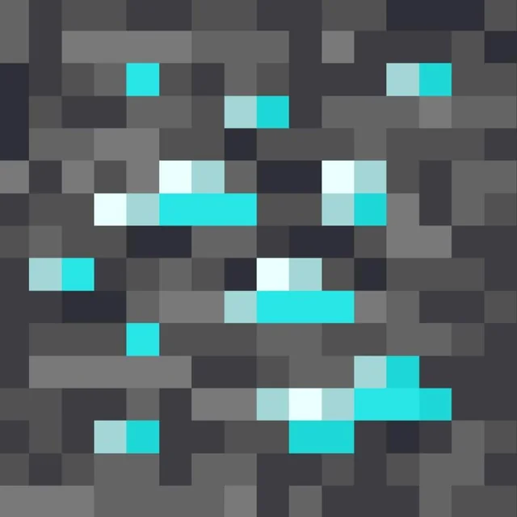
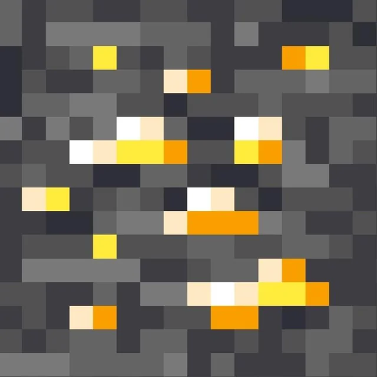
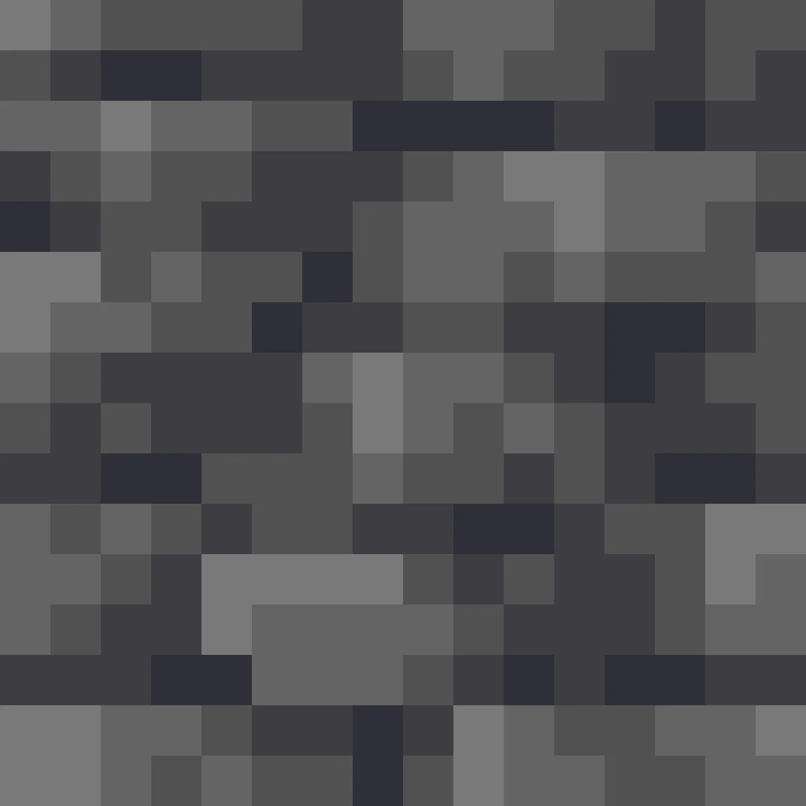
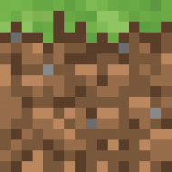
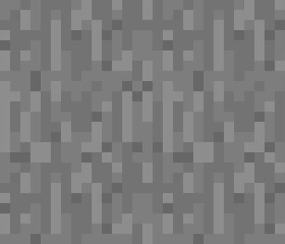
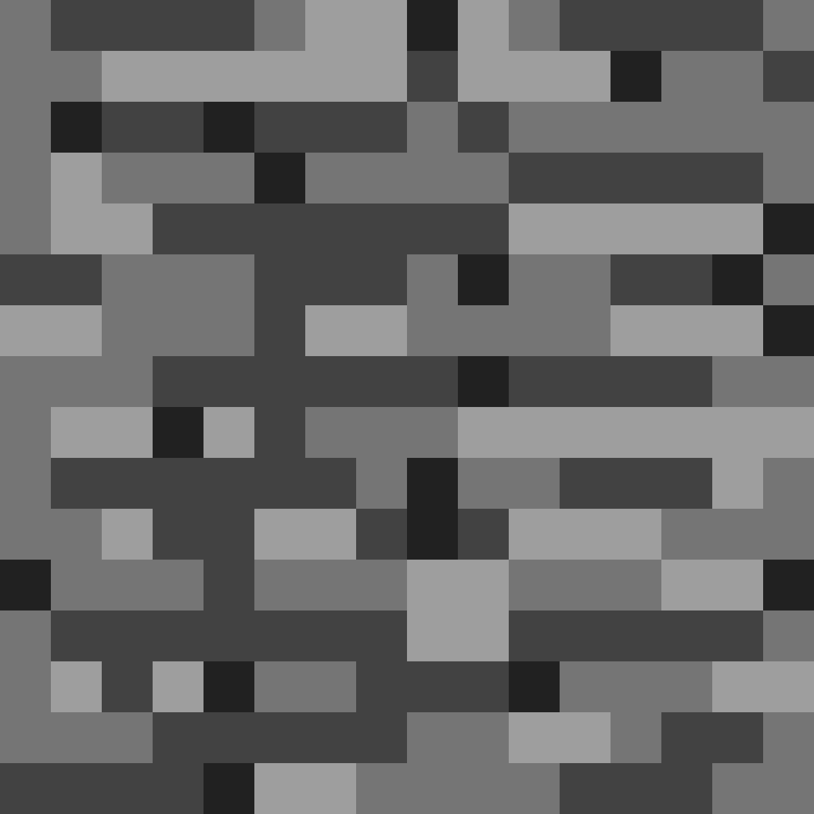

Precyzja
gwarantuje dokładne odwzorowanie zapisanego układu itemów bez błędów i przesunięć.
Minecraft 1.21-1.21.9 · Fabric Mod
Przejmij kontrole. Zniszcz losowosc. Graj na swoich zasadach.
Darmowy · Wymaga Fabric Loader
AntyKostka – mod do Minecrafta, który pozwala zapisać i automatycznie przywrócić wcześniej ustawiony układ itemów w ekwipunku gracza. Koniec z ręcznym układaniem wszystkiego od nowa.
Niezaleznie czy grasz solo, na serwerze ze znajomymi, czy w rozbudowanym modpacku - AntyKostka dziala plynnie i bezproblemowo. Zaprojektowany specjalnie pod Fabric 1.21-1.21.9 | Inne wersje na naszym discordzie!

gwarantuje dokładne odwzorowanie zapisanego układu itemów bez błędów i przesunięć.

optymalizuje wykorzystanie zasobów, aby mod działał płynnie i bez zbędnego obciążenia gry.

zapewnia bezproblemowe działanie nawet podczas długiej rozgrywki.

współpracuje z innymi modami i różnymi wersjami gry.

zawsze przywraca zapisany układ wtedy, kiedy tego potrzebujesz.

podstawowy system moda, na którym opiera się cała jego funkcjonalność.
"Mega przydatny mod, w końcu nie muszę ciągle układać ekwipunku od nowa."
"Działa dokładnie tak jak powinien , zapisuję i mam spokój "
"Na anarchia.gg dużo osób tego używa i serio robi robotę."

"Najlepsze jest to, że wszystko wraca na swoje miejsce jednym kliknięciem."
"Nie sądziłem, że tego potrzebuję, a teraz nie wyobrażam sobie gry bez tego moda."
AntyKostka jest w 100% darmowy. Zainstaluj go w minute i odmien swoja rozgrywke w Minecraft 1.21-1.21.9 juz dzis.